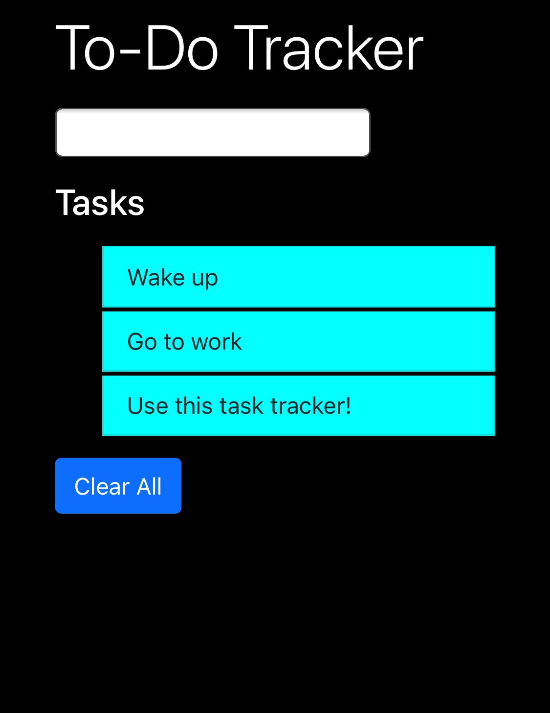

To-Do Tracker

This is a simple task tracker. You can add tasks, click/tap to mark them as completed, and clear the
entire list. Tasks are saved to local storage, so that you can retain your task list even after refreshing
or reopening the webpage.
 Sarah Rivera | Portfolio
Sarah Rivera | Portfolio